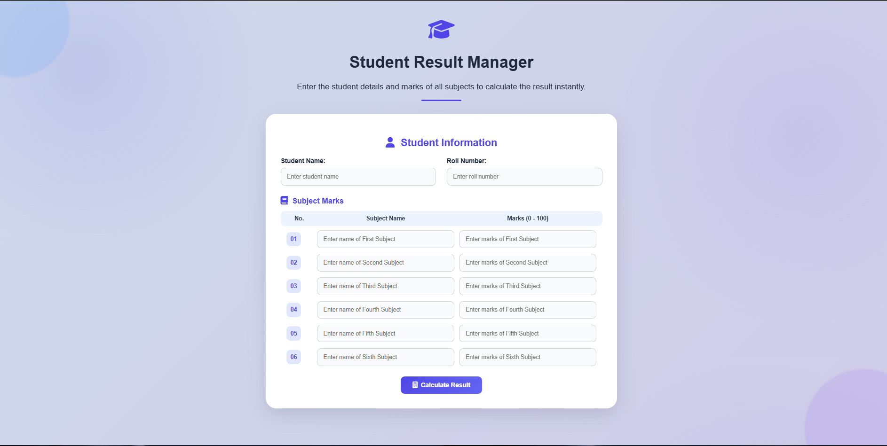
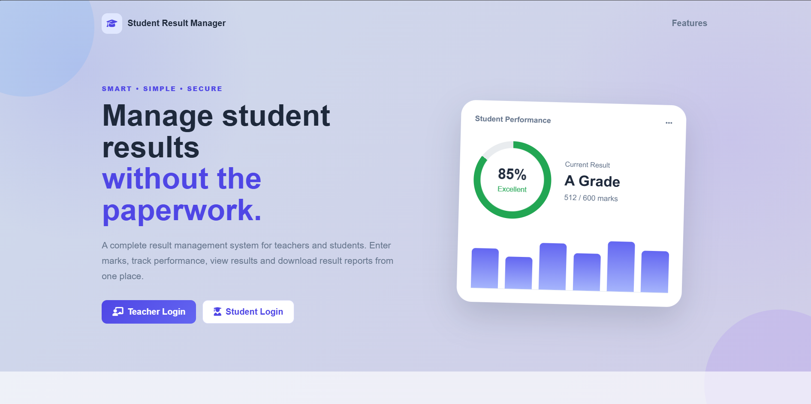
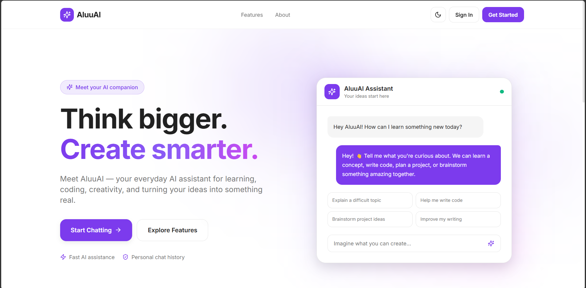

01
Frontend development
Creating page layouts and interactive interfaces with the core web technologies.
HELLO, WORLD! I'M
I’m a BCA student learning to turn ideas into useful, responsive web experiences. Currently exploring JavaScript, the MERN stack, and automation.

01 / ABOUT ME
I’m pursuing my Bachelor of Computer Applications (BCA) and building my skills through hands-on practice.
I enjoy understanding how websites work, improving user interfaces, and gradually connecting frontends to real functionality. My current focus is strengthening JavaScript fundamentals and progressing toward full-stack development with the MERN stack.
This portfolio is a living record of my learning journey. I’ll keep adding projects, lessons, and experiments as I grow.
02 / WHAT I'M LEARNING
A snapshot of the technologies I’m learning and using in practice.
Creating page layouts and interactive interfaces with the core web technologies.
Practising a developer workflow, managing code, and testing web requests.
Building foundations for full-stack applications and learning how data is handled.
Exploring workflows that connect forms, APIs, spreadsheets, and messaging tools.
↗ This list reflects my learning and practice—not a claim of expert-level proficiency.
03 / SELECTED WORK
I believe the best way to learn is to build. These are projects I’ve worked on so far; I’ll add screenshots and repository links as I prepare them.

PROJECT 01A frontend prototype for entering student and subject marks and displaying calculated results. Backend and database integration are future improvements.

PROJECT 02An enhanced version of my student result project, developed to move beyond a frontend prototype toward a full-stack application with backend functionality and data management.

PROJECT 03AluuAI is a modern AI-powered chat application designed to provide helpful, intelligent, and conversational responses. It allows users to ask questions, explore ideas, get coding assistance, and receive responses in multiple languages, including English and Hindi.
04 / MY JOURNEY
Small steps, consistent practice, and projects that get better with every iteration.
Practised HTML, CSS, and JavaScript basics through exercises and small interfaces.
Worked on a student result interface and improved its layout, interactions, and responsiveness.
Strengthening JavaScript and exploring Node.js, Express, MongoDB, APIs, and automation workflows.
Publish projects, learn from feedback, and turn prototypes into more complete applications.
05 / HAVE A PROJECT IN MIND?
I’m open to connecting with fellow learners, discussing projects, and exploring suitable opportunities.